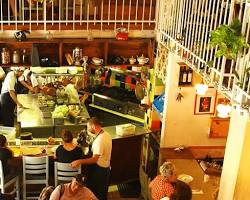
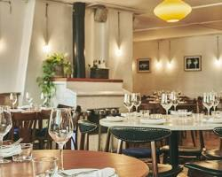
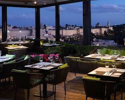
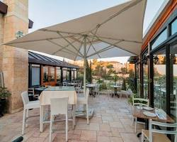
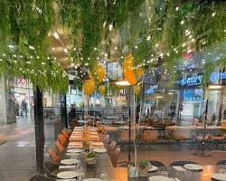
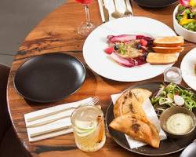

מחניודה
מסעדת שף ירושלמית בלב שוק מחנה יהודה.
לפרטים נוספים →
מטבח ישראלי עכשווי מאת השפים אסף גרניט ואורי נבון, עם אווירה תוססת ופתוחה למטבח.
- כתובת: בית יעקב 10, ירושלים
- טלפון: 02-533-3442
- אתר: machneyuda.co.il
מטבחים מקומיים, מסעדות שף ודוכני שוק צבעוניים.

מסעדת שף ירושלמית בלב שוק מחנה יהודה.
מטבח ישראלי עכשווי מאת השפים אסף גרניט ואורי נבון, עם אווירה תוססת ופתוחה למטבח.

ביסטרו שף אלגנטי בבית האמנים ההיסטורי.
מסעדת מונא מציעה תפריט עדכני עם נגיעות אירופיות, בר יין עשיר ואווירה אינטימית.

מסעדת גורמה עם נוף מהמם על גג מלון ממילא.
תפריט ים-תיכוני מוקפד לצד בר יין עשיר, עם נוף עוצר נשימה לעיר העתיקה.

מסעדת שף כשרה בשכונת משכנות שאננים.
טורו משלבת מטבח ים-תיכוני מודרני עם נוף פתוח לעיר העתיקה ואווירה רומנטית.

מסעדת ביסטרו כשרה למהדרין בצפון ירושלים.
מקום רחב ידיים עם תפריט ישראלי מודרני, קינוחים וארוחות בוקר עשירות.

מסעדת שף כשרה בכיכר המוזיקה, עם אווירה צעירה ואלגנטית.
מטבח מודרני עם נגיעות ים-תיכוניות ופרזנטציה מרהיבה. אחת החוויות הקולינריות המרשימות בעיר.